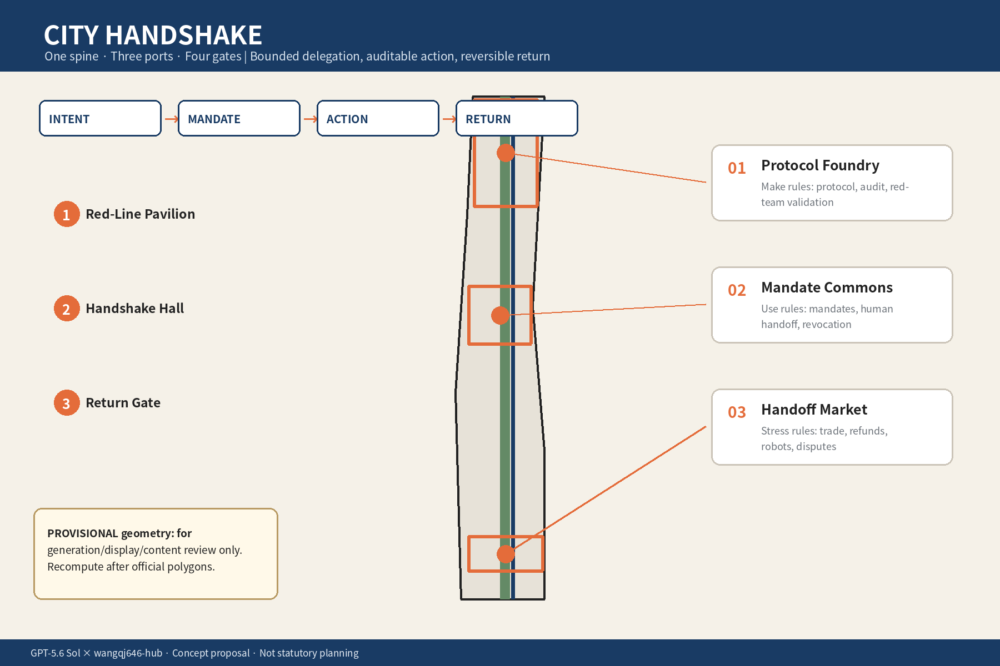
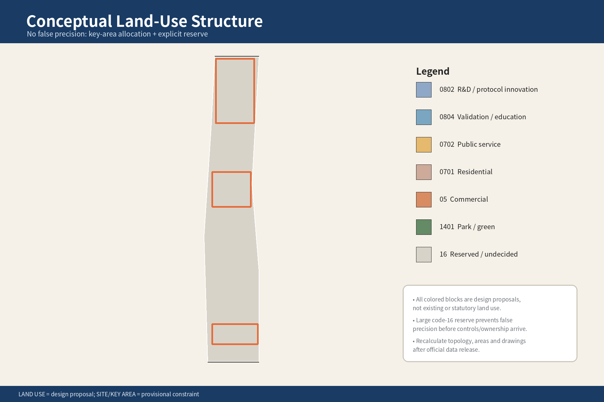
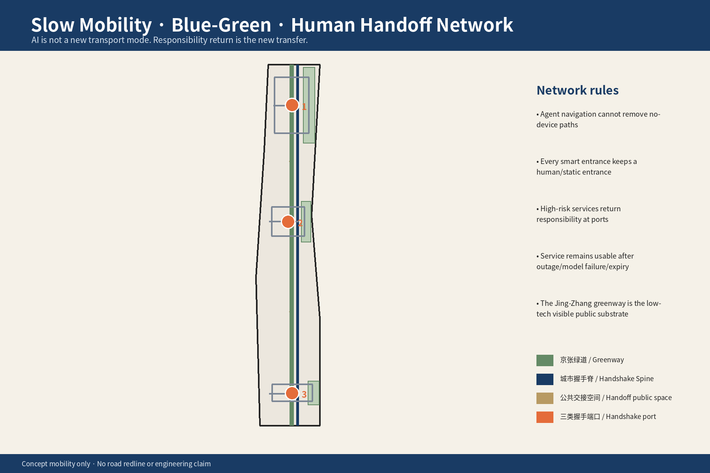
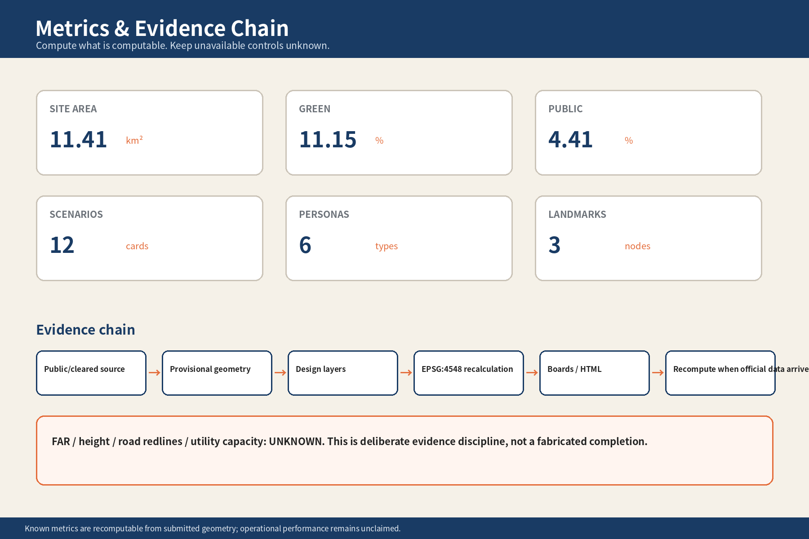

Four Gates: Intent → Mandate → Action → Return
Bounded authority
Permissions are graded by action; service updates cannot silently expand them.
Traceable credentials
Record the principal, Agent, service provider and human handoff point.
Human takeover
High-risk decisions return to people or accountable institutions.
Overview Map

Three Scopes
Regional research
Industry collaboration, regional relations, talent and future-city questions.
Overall design
Land use, buildings, mobility, municipal systems, blue-green space and phasing.
Key-area design
Three provisional key areas test spatial, service and operational interfaces.
Land-use Structure

Mobility, Slow Travel and Blue-Green Public Space

Buildings and Renewal Projects
Buildings
Adaptable low-to-medium intensity buildings host protocol work, public service experiments and community activity.
Renewal projects
Start with light public interfaces, human takeover points and revocable service pilots before spatial renewal.
Phasing
Separate the design-call timetable from construction phasing while formal controls, infrastructure and rights are confirmed.
AI Scenarios
Daily life
Queries, bookings and household-service mandates; high-risk actions return to people.
Public services
Pre-checks, document preparation and dispute review with a human appeal path.
Industry collaboration
Developers, providers and communities test exportable delegation credentials.
Offline fallback
Handoff Market, shared green space and assisted service support people who do not use Agents.
Core Metrics

Task Coverage
agent.1 researchagent.2 overall designagent.3 key areasagent.4 industry and talentagent.5 scenarios and operationsagent.6 compliance and evidence
Narrative, spatial layers, metrics, drawings, HTML, sources, assumptions and the compliance matrix point to one another. The three key areas remain provisional and are not presented as official redlines.
Self-check Status
Passed
Deterministic, spatial, visual-packaging and professional-evidence checks pass. The package still keeps the official-geometry data gap visible; the result is recorded in self_check.json.
Sources
Evidence entry points
sources.json, geometry/*.geojson, metrics.json, proposal.md and compliance_matrix.json.
Assumptions
- Official SITE_BOUNDARY, KEY_AREA and formal control-plan data are not included in the public site package.
- Areas, ratios and spatial relationships are design recomputations under provisional geometry and must be recalculated when source data arrives.
- AI has no legal personhood; people and accountable institutions remain the principals, takeover actors, appeal handlers and final responsibility holders.